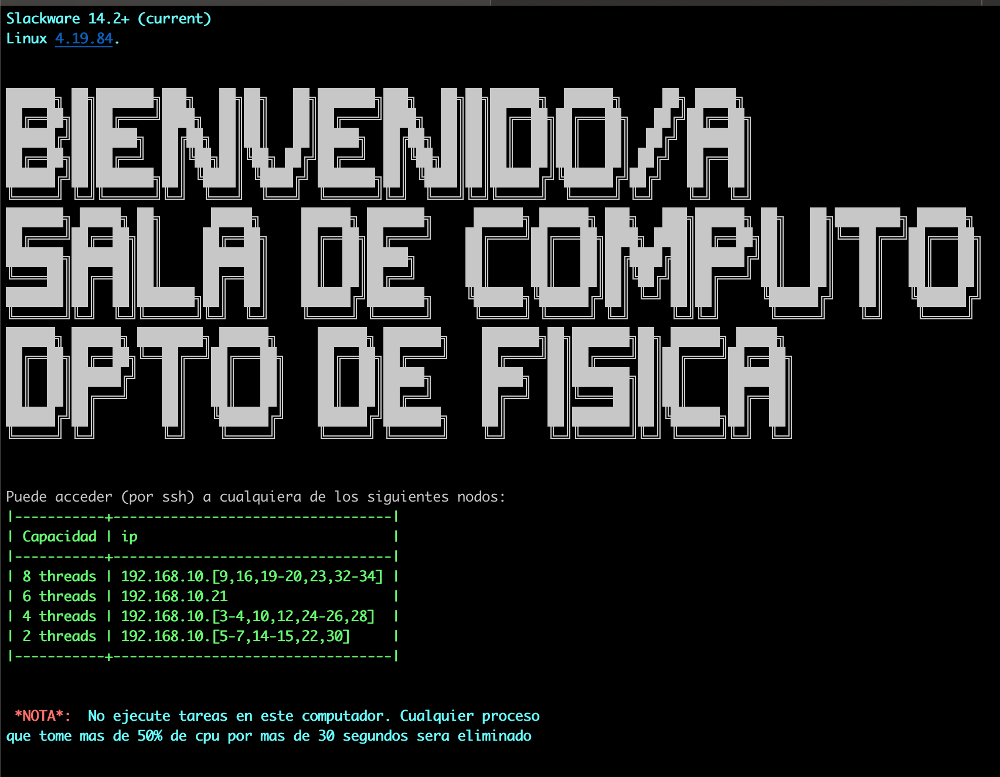
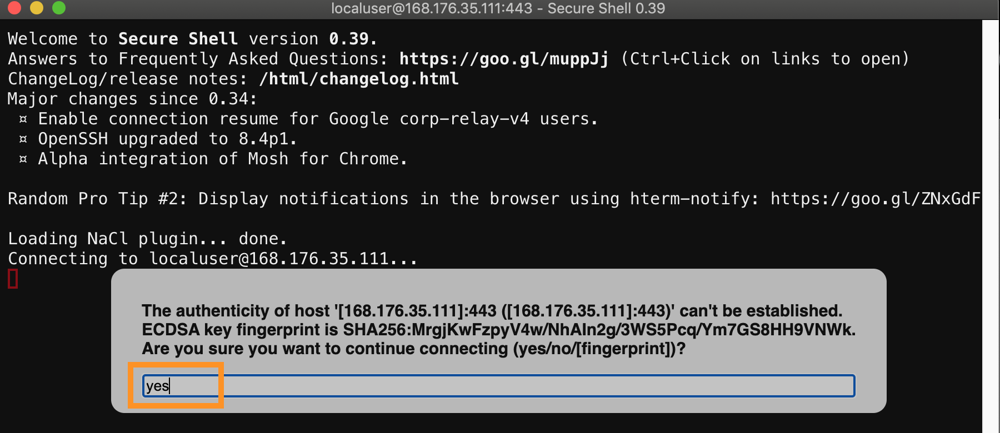
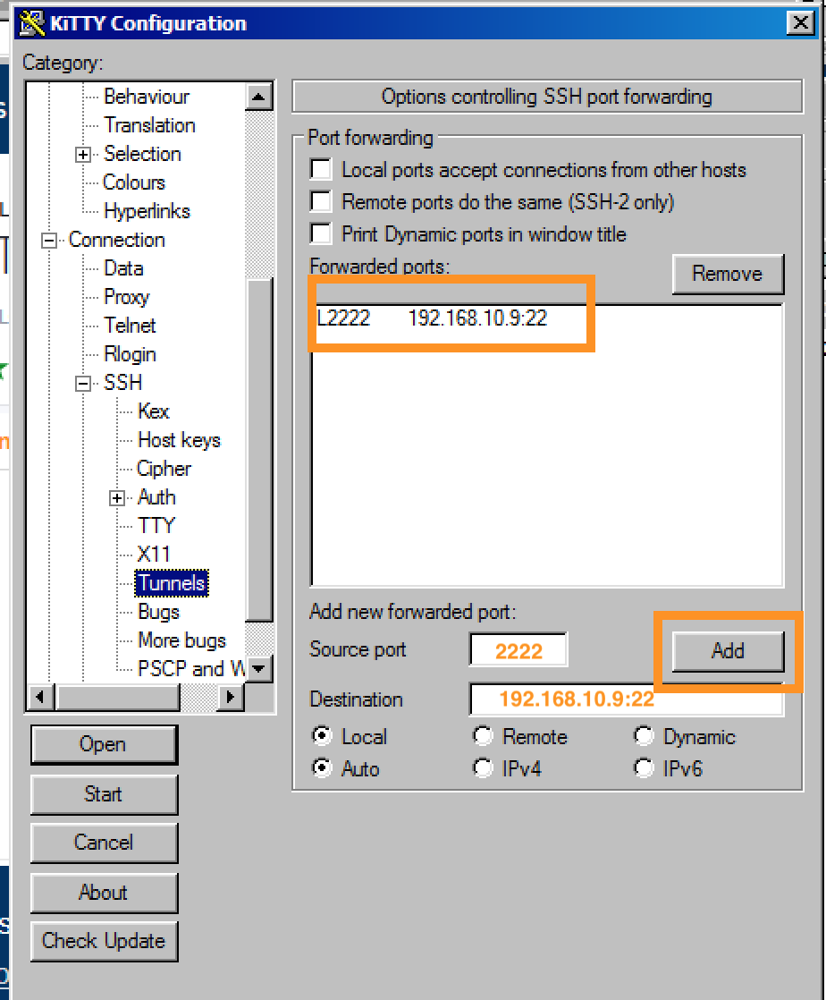
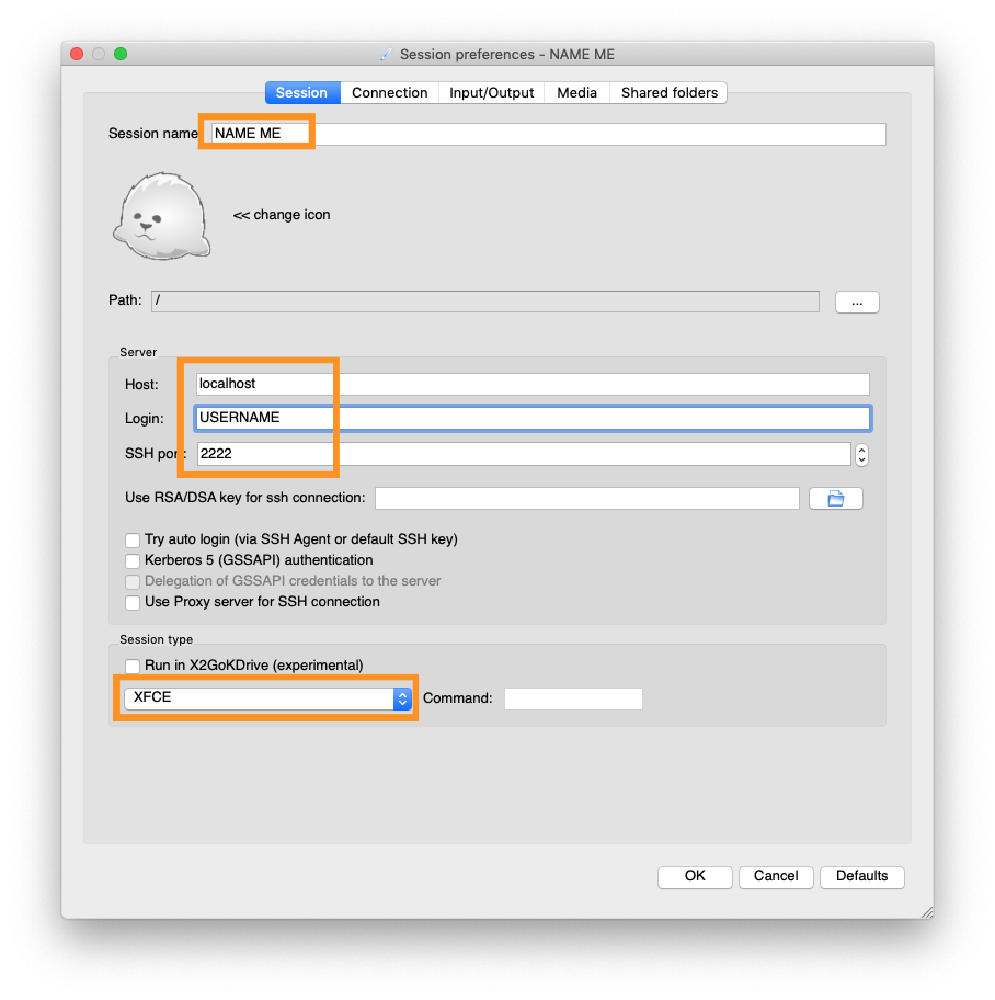
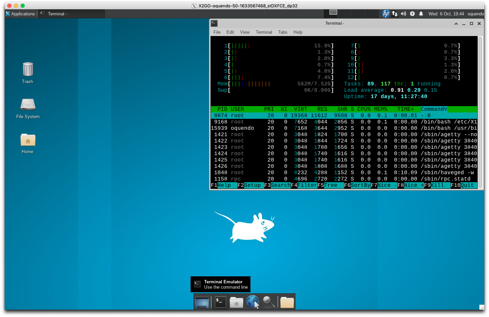

Readme Salafis
Table of Contents
1 Descripción general
La sala de cómputo tiene un servidor básico de entrada que además comparte archivos y autenticación con los nodos. La sala es completamente heterogénea, siendo una reunión de diversos computadores con diversas características y edades. Actualmente () se tienen:
- 8 computadores de 8 threads
- 8 computadores de 4 threads
- 1 computador de 6 threads
- 7 computadores de 2 threads
La memoría ram varía de apenas 1Gb para los más viejos, a 12 Gb en los más nuevos. La capacidad del disco duro también varía, aunque el home de los usuarios es un directorio compartido en todos los nodos desde el servidor, usando NFS. La mezcla de diversas, viejas y pequeñas características obliga a usar una distribución eficiente, y en este caso se Slackware 14.2+ (current), con el entorno gráfico xfce4.16. Se incluyen los compiladores más actualizados, editores, etc.
Para realizar la conexión, el usuario tiene dos opciones:
- Conectarse por el protocolo ssh al servidor principal y de allí navegar a los computadores internos que desee, también usando ssh.
- Conectarse con un cliente x2go a cualquier computador interno. Para esto es necesario configurar un tunnel usando el servidor como bastión intermedio.
Estas opciones serán descritas con más detalle a continuación. Es importante notar que no se deben ejecutar tareas en el servidor de login
2 Conexión por ssh
2.1 Conexión básica por terminal
El ip público del servidor es 168.176.35.111. La conexión básica por ssh se establece de la siguiente manera
ssh -p 443 USERNAME@168.176.35.111
donde 443 es el puerto de conexión y debe reemplazarse USERNAME por el
nombre de usuario (debe tener una cuenta previamente creada). Este comando le
pedirá la clave (si no está usando llaves de autenticación, o si es la primera
vez) y si la autenticación es exitosa el usuario observará el siguiente prompt:

Allí se describen los diversos ips internos a los que se puede conectar el usuario. Por ejemplo, si desea conectarse a un nodo de 4 threads, podría usar
ssh 192.168.10.12
o también
ssh sala12
No es necesario especificar el puerto ya que se usa el que es por defecto, el 22. Allí podrá ejecutar sus trabajos.
NOTA: La primera vez que se conecte a cada nodo, ya sea el de login o uno interno, se le va a preguntar por la autenticidad de ese host. Debe aceptarla.
2.2 Conexión desde Windows
Windows 10 trae soporte para cliente ssh, especialmente en el WSL. En lo que sigue se mostrarán opciones para esta y otras versiones de Windows:
- Instale una extensión de google chrome llamada chrome secure shell .
- Instale una aplicación: como kitty, putty, winsshterm
Las imágenes que siguen muestran la conexión desde kitty (en una máquina virtual de windows 7) o desde la extensión de chrome (que funciona en cualquier instalación de chrome)
Chrome secure shell: Ejecute la extensión e introduzca la información necesaria

Debe autorizar los permisos necesarios, como darle permiso a la extensión para conectarse o aceptar la identidad de la máquina remota escribiendo yes en el cuadro que sale

Y luego podrá entrar sin problema

Es importante resaltar que esta extensión soporta mosh, que le permite reconectarse automáticamente después de una caída de conexíon.
kitty: Configuración de la conexión: simplemente escriba el ip, el puerto, y da click en start (a la izquierda)

Luego escriba su nombre de usuario y contraseña y deberá entrar al prompt del login server:

2.3 Usando proxyjump para acceder directamente a un computador interno (terminal)
Si un usuario desea conectarse directamente a un pc interno puede usar el servidor de login como bastión intermedio, a través el siguiente comando
ssh -J USERNAME@168.176.35.111:443 USERNAME@192.168.10.12
Y en este caso entrará directamente al nodo 192.168.10.12 y será transparente
su conexión.
2.3.1 Windows
No todos los clientes ssh de windows soportan las versiones recientes de ssh y la opción proxyjump. Sin embargo puede seguir las siguientes instrucciones para kitty , o usar plink, o crear un tunnel como se muestra más adelante.
2.4 Conexión por medio de llaves y sin password
Si prefiere no escribir la clave cada vez que se conecta, además de aumentar la seguridad, puede crear una llave pública privada y copiarla al servidor de login (ver, por ejemplo, https://www.tecmint.com/ssh-passwordless-login-using-ssh-keygen-in-5-easy-steps/). Basicamente debe ejecutar los siguientes comandos
Generar la llave (puede dejar vacía la passphrase de la llave):
ssh-keygen -t rsa
Copiar la llave
ssh-copy-id -p 443 USERNAME@168.176.35.111Debe introducir el password. Si lo anterior funciona exitosamente, la siguiente vez que use ssh al servidor de login no tendrá que introducir la clave.
3 Configuración de un tunel para acceso directo a un nodo interno
El objetivo de este punto es establecer una conexión directa a un nodo interno y dejar esta conexión expuesta localmente en un puerto específico. Esto se llama “abrir un túnel”. La utilidad de un tunel es que no será necesario hacer dos logins y además permitirá conectarse graficamente a un escritorio compartido en una sesión gráfica.
Asumiendo que queremos un túnel al computador interno de ip 192.168.10.12, el comando a ejecutar es
ssh -f -N -o 'Compression=no' -L 2222:192.168.10.12:22 -p 443 USERNAME@168.176.35.111
En este caso, el puerto local del tunel es el 2222.
Para probar que el tunel funciona, ejecute:
ssh -p 2222 USERNAME@localhost
y deberá aparecer inmediatamente logueado en 192.168.10.12 .
El túnel debe ser funcional para que pueda usar x2goclient.
3.1 Windows
chrome secure shell: configure la conexión como se muestra a continuación, conéctse y manténgala abierta

kitty: Además de colocar el ip y el puerto, en las opciones a la izquierda debe ir a ssh, dar click en el símbolo +, seleccionar tunnel, en source port color
2222, en destination192.168.10.12:22, le da add, y debe quedar como se muestra a continuación

Luego le da click en start y NO cierra la sesión.
4 Conexión gráfica usando x2goclient
El cliente x2go permite conectarse a un servidor x2go y tener un escritorio remoto. En este caso, todos los nodos internos ofrecen un servidor x2go. El servidor principal de login no tiene un servidor x2go, para evitar que se realicen trabajos allí. Como es necesario entonces conectarse directamente a un cliente interno, se debe usar un túnel (ya que x2go no soporta la opción proxyjump mostrada anteriormente). Con un tunnel puede usar cualquier cliente, como x2go, tighervnc, etc. En estos ejemplos se usará x2go. Basicamente se seguirá el tutorial que se muestra en https://www.nas.nasa.gov/hecc/support/kb/x2go-an-alternative-to-x11-and-vnc_651.html
NOTA: Debe tener un tunnel funcional. Se asumirá que está en el puerto 2222.
4.1 Configuración de x2go (una sola vez)
- Instale el cliente descargándolo de client desde https://wiki.x2go.org/doku.php/download:start .
Ejecute x2go y en el menú seleccione
Session -> New Session. Allí llene la información que básicamente sería darle un nombre a la sessión, en Host colocar localhost, en login su nombre de usuario, en el puerto colocar 2222 (el que se usó en el túnel), y en el tipo de sesión selccionar XFCE. como muestra la siguiente figura:
4.2 Conexión con x2go
Una vez tenga configurada la sesión y ya haya creado el tunel simplemente de doble click a la sesión, llene el password si es necesario, y tendrá a su disposición un entorno gráfico ejecutado en el computador interno que haya escogido en el tunel, como lo muestra la siguiente figura (la primera vez que lo ejecute xfce le preguntará por la configuración: escoja por defecto, NO escoja empty panel)
